CODING AGENTS AS PIXEL WORLD MODELS
traex/DeepSeek-V4.1-Flash · 0117
点击播放 · 原生 RGB 像素
逐轮保存的候选
回放视频、检查图与代码变化。
每份候选均可单独播放。实际图片检查记录在下方工具轨迹中。
候选 01播放与检查图
点击播放 · 原生 RGB 像素
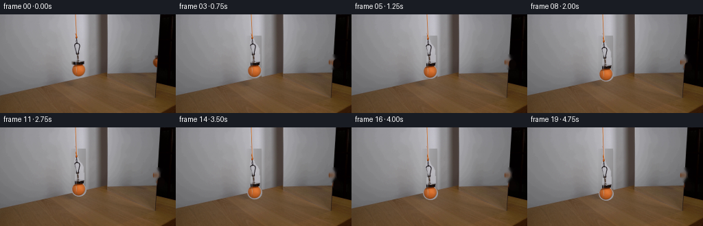
展开代码变化
--- 上一保存版本
+++ 本次保存版本
@@ -0,0 +1,219 @@
+from pathlib import Path
+
+import cv2
+import numpy as np
+from PIL import Image
+
+import artifact_io
+
+
+ROOT = Path(__file__).resolve().parent
+FRAME_COUNT = 20
+
+
+def _soft_ellipse_mask(
+ height: int,
+ width: int,
+ center: tuple[float, float],
+ radii: tuple[float, float],
+) -> np.ndarray:
+ yy, xx = np.mgrid[:height, :width]
+ cx, cy = center
+ rx, ry = radii
+ distance = np.sqrt(((xx - cx) / rx) ** 2 + ((yy - cy) / ry) ** 2)
+ return np.clip((1.04 - distance) / 0.08, 0.0, 1.0)
+
+
+def _assembly_mask(shape: tuple[int, int]) -> np.ndarray:
+ height, width = shape
+ yy, xx = np.mgrid[:height, :width]
+ mask = np.zeros(shape, dtype=np.float32)
+
+ # Carabiner, clasp and magnet body. The narrow waist follows the silhouette
+ # visible in the supplied frame.
+ hardware = np.zeros(shape, dtype=np.uint8)
+ points = np.array(
+ [
+ (109, 33),
+ (113, 33),
+ (114, 37),
+ (116, 41),
+ (119, 44),
+ (121, 49),
+ (121, 55),
+ (122, 58),
+ (122, 69),
+ (120, 73),
+ (112, 73),
+ (109, 69),
+ (109, 59),
+ (111, 56),
+ (111, 52),
+ (109, 47),
+ (108, 42),
+ ],
+ dtype=np.int32,
+ )
+ cv2.fillPoly(hardware, [points], 255)
+ hardware_alpha = cv2.GaussianBlur(hardware.astype(np.float32) / 255.0, (3, 3), 0.48)
+ mask = np.maximum(mask, hardware_alpha)
+
+ # The ball is nearly circular but slightly flattened by perspective.
+ ball = _soft_ellipse_mask(height, width, (114.6, 81.7), (10.9, 9.8))
+ mask = np.maximum(mask, ball)
+
+ # Keep the small contact point between the magnet and ball continuous.
+ contact = (xx >= 109) & (xx <= 121) & (yy >= 70) & (yy <= 75)
+ mask = np.maximum(mask, contact.astype(np.float32))
+ return mask
+
+
+def _reflection_mask(shape: tuple[int, int]) -> np.ndarray:
+ height, width = shape
+ yy, xx = np.mgrid[:height, :width]
+ region = (xx >= 225) & (xx <= 239) & (yy >= 59) & (yy <= 79)
+ ball = _soft_ellipse_mask(height, width, (233.7, 70.5), (5.8, 7.0))
+ return ball * region
+
+
+def _background_plate(source: np.ndarray) -> np.ndarray:
+ mask = np.zeros(source.shape[:2], dtype=np.uint8)
+ mask[31:94, 103:126] = 255
+ mask[58:81, 224:241] = 255
+ bgr = cv2.cvtColor(source, cv2.COLOR_RGB2BGR)
+ restored = cv2.inpaint(bgr, mask, 4, cv2.INPAINT_TELEA)
+ plate = cv2.cvtColor(restored, cv2.COLOR_BGR2RGB).astype(np.float32)
+
+ # Inpainting can leave a faint directional streak on the smooth wall.
+ # Rebuild those two broad areas from clean pixels immediately around them.
+ for y in range(31, 94):
+ left = plate[y, 96:104].mean(axis=0)
+ right = plate[y, 126:135].mean(axis=0)
+ weight = np.linspace(0.0, 1.0, 22, dtype=np.float32)[:, None]
+ wall = left[None, :] * (1.0 - weight) + right[None, :] * weight
+ plate[y, 103:125] = wall
+ return plate
+
+
+def _composite_layer(
+ canvas: np.ndarray,
+ source: np.ndarray,
+ alpha: np.ndarray,
+ offset_x: int,
+ offset_y: int,
+) -> None:
+ height, width = canvas.shape[:2]
+ ys, xs = np.where(alpha > 0.002)
+ if not len(xs):
+ return
+ src_x = xs + offset_x
+ src_y = ys + offset_y
+ valid = (src_x >= 0) & (src_x < width) & (src_y >= 0) & (src_y < height)
+ xs, ys = xs[valid], ys[valid]
+ src_x, src_y = src_x[valid], src_y[valid]
+ a = alpha[ys, xs, None]
+ canvas[src_y, src_x] = (
+ source[ys, xs] * a + canvas[src_y, src_x] * (1.0 - a)
+ )
+
+
+def _extend_cord(
+ canvas: np.ndarray,
+ source: np.ndarray,
+ assembly_shift: float,
+) -> None:
+ # The cord leaves frame at the top. Stretch only this thin strip, keeping
+ # the upper anchor fixed and its lower endpoint attached to the magnet.
+ strip = source[0:34, 107:115].astype(np.float32)
+ target_height = int(round(34 + assembly_shift))
+ stretched = cv2.resize(strip, (8, target_height), interpolation=cv2.INTER_CUBIC)
+
+ yy, xx = np.mgrid[:target_height, 0:8]
+ center = 4.0 + 0.5 * (1.0 - yy / max(target_height - 1, 1))
+ half_width = 1.3 - 0.22 * (yy / max(target_height - 1, 1))
+ alpha = np.clip((half_width + 0.55 - np.abs(xx - center)) / 0.55, 0.0, 1.0)
+
+ dest = canvas[0:target_height, 107:115]
+ canvas[0:target_height, 107:115] = (
+ stretched * alpha[:, :, None] + dest * (1.0 - alpha[:, :, None])
+ )
+
+
+def _reflection_sprite(source: np.ndarray, mask: np.ndarray) -> tuple[np.ndarray, np.ndarray]:
+ crop = source[56:82, 224:242].astype(np.float32)
+ alpha = mask[56:82, 224:242].astype(np.float32)
+
+ # The mirror is slightly darker and softer than the direct object.
+ crop = crop * 0.88 + np.array([7.0, 4.0, 3.0], dtype=np.float32)
+ alpha = cv2.GaussianBlur(alpha, (3, 3), 0.55)
+ return crop, alpha
+
+
+def _render_frame(
+ plate: np.ndarray,
+ source: np.ndarray,
+ assembly_alpha: np.ndarray,
+ reflection_crop: np.ndarray,
+ reflection_alpha: np.ndarray,
+ shift: float,
+) -> np.ndarray:
+ canvas = plate.copy()
+ _extend_cord(canvas, source, shift)
+
+ # Move the assembly in whole-pixel steps. Sub-pixel motion is represented
+ # by a one-pixel eased progression at the 4 fps delivery rate.
+ integer_shift = int(round(shift))
+ _composite_layer(canvas, source.astype(np.float32), assembly_alpha, 0, integer_shift)
+
+ # In the mirror, vertical image displacement is preserved by a plane
+ # reflection. The crop is shifted as a coherent reflected object.
+ ry = 56 + integer_shift
+ rx = 224
+ dest = canvas[ry : ry + reflection_crop.shape[0], rx : rx + reflection_crop.shape[1]]
+ canvas[ry : ry + reflection_crop.shape[0], rx : rx + reflection_crop.shape[1]] = (
+ reflection_crop * reflection_alpha[:, :, None]
+ + dest * (1.0 - reflection_alpha[:, :, None])
+ )
+ return np.clip(canvas, 0, 255).astype(np.uint8)
+
+
+def generate_frames() -> np.ndarray:
+ source = np.asarray(Image.open(ROOT / "first_frame.png").convert("RGB"))
+ if source.shape != (144, 256, 3):
+ raise ValueError(f"Unexpected first frame shape: {source.shape}")
+
+ plate = _background_plate(source)
+ assembly_alpha = _assembly_mask(source.shape[:2])
+ reflection_alpha = _reflection_mask(source.shape[:2])
+ reflection_crop, reflection_alpha_crop = _reflection_sprite(source, reflection_alpha)
+
+ frames = []
+ for index in range(FRAME_COUNT):
+ if index == 0:
+ frames.append(source.copy())
+ continue
+
+ # Smooth start and finish, with a steady, restrained lowering motion.
+ t = index / (FRAME_COUNT - 1)
+ eased = 0.5 - 0.5 * np.cos(np.pi * t)
+ shift = 15.0 * eased
+ frames.append(
+ _render_frame(
+ plate,
+ source,
+ assembly_alpha,
+ reflection_crop,
+ reflection_alpha_crop,
+ shift,
+ )
+ )
+ return np.stack(frames)
+
+
+def main() -> None:
+ frames = generate_frames()
+ artifact_io.save(frames, ROOT)
+
+
+if __name__ == "__main__":
+ main()
候选 02播放与检查图
点击播放 · 原生 RGB 像素
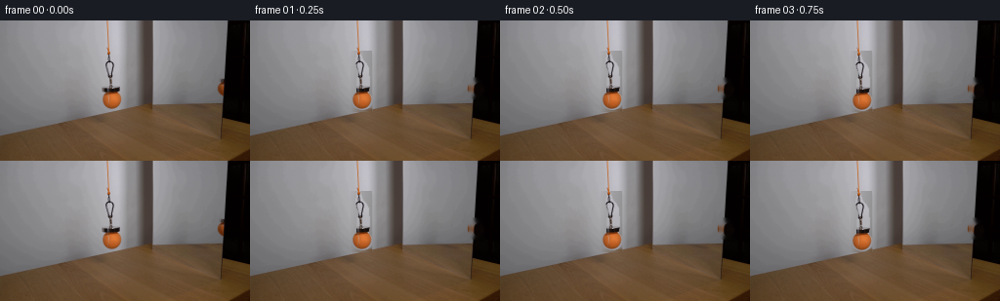
展开代码变化
--- 上一保存版本
+++ 本次保存版本
@@ -24,38 +24,19 @@
return np.clip((1.04 - distance) / 0.08, 0.0, 1.0)
-def _assembly_mask(shape: tuple[int, int]) -> np.ndarray:
- height, width = shape
+def _assembly_mask(source: np.ndarray) -> np.ndarray:
+ height, width = source.shape[:2]
yy, xx = np.mgrid[:height, :width]
- mask = np.zeros(shape, dtype=np.float32)
+ mask = np.zeros((height, width), dtype=np.float32)
- # Carabiner, clasp and magnet body. The narrow waist follows the silhouette
- # visible in the supplied frame.
- hardware = np.zeros(shape, dtype=np.uint8)
- points = np.array(
- [
- (109, 33),
- (113, 33),
- (114, 37),
- (116, 41),
- (119, 44),
- (121, 49),
- (121, 55),
- (122, 58),
- (122, 69),
- (120, 73),
- (112, 73),
- (109, 69),
- (109, 59),
- (111, 56),
- (111, 52),
- (109, 47),
- (108, 42),
- ],
- dtype=np.int32,
- )
- cv2.fillPoly(hardware, [points], 255)
- hardware_alpha = cv2.GaussianBlur(hardware.astype(np.float32) / 255.0, (3, 3), 0.48)
+ # Segment the dark metal from the bright wall. This keeps the open center
+ # of the carabiner genuinely transparent as the assembly moves.
+ hardware_alpha = np.zeros((height, width), dtype=np.float32)
+ region = (xx >= 104) & (xx <= 126) & (yy >= 32) & (yy <= 74)
+ luminance = source.astype(np.float32).mean(axis=2)
+ metal = np.clip((158.0 - luminance) / 24.0, 0.0, 1.0)
+ hardware_alpha[region] = metal[region]
+ hardware_alpha = cv2.GaussianBlur(hardware_alpha, (3, 3), 0.38)
mask = np.maximum(mask, hardware_alpha)
# The ball is nearly circular but slightly flattened by perspective.
@@ -76,23 +57,17 @@
return ball * region
-def _background_plate(source: np.ndarray) -> np.ndarray:
- mask = np.zeros(source.shape[:2], dtype=np.uint8)
- mask[31:94, 103:126] = 255
- mask[58:81, 224:241] = 255
+def _background_plate(
+ source: np.ndarray,
+ assembly_alpha: np.ndarray,
+ reflection_alpha: np.ndarray,
+) -> np.ndarray:
+ mask = np.maximum(assembly_alpha, reflection_alpha)
+ mask = ((mask > 0.08) * 255).astype(np.uint8)
+ mask = cv2.dilate(mask, np.ones((3, 3), dtype=np.uint8), iterations=1)
bgr = cv2.cvtColor(source, cv2.COLOR_RGB2BGR)
restored = cv2.inpaint(bgr, mask, 4, cv2.INPAINT_TELEA)
- plate = cv2.cvtColor(restored, cv2.COLOR_BGR2RGB).astype(np.float32)
-
- # Inpainting can leave a faint directional streak on the smooth wall.
- # Rebuild those two broad areas from clean pixels immediately around them.
- for y in range(31, 94):
- left = plate[y, 96:104].mean(axis=0)
- right = plate[y, 126:135].mean(axis=0)
- weight = np.linspace(0.0, 1.0, 22, dtype=np.float32)[:, None]
- wall = left[None, :] * (1.0 - weight) + right[None, :] * weight
- plate[y, 103:125] = wall
- return plate
+ return cv2.cvtColor(restored, cv2.COLOR_BGR2RGB).astype(np.float32)
def _composite_layer(
@@ -182,9 +157,9 @@
if source.shape != (144, 256, 3):
raise ValueError(f"Unexpected first frame shape: {source.shape}")
- plate = _background_plate(source)
- assembly_alpha = _assembly_mask(source.shape[:2])
+ assembly_alpha = _assembly_mask(source)
reflection_alpha = _reflection_mask(source.shape[:2])
+ plate = _background_plate(source, assembly_alpha, reflection_alpha)
reflection_crop, reflection_alpha_crop = _reflection_sprite(source, reflection_alpha)
frames = []
候选 03播放与检查图

可观测工具轨迹
实际执行的命令与返回图片。
命令 1exit 0
/bin/bash -c "pwd && rg --files -g '"'!*.mp4'"' -g '"'!*.mov'"' -g '"'!*.webm'"' | sed -n '1,200p'"
命令 2exit 0
/bin/bash -c "sed -n '1,240p' GENERATION_RULES.md"
命令 3exit 0
/bin/bash -c 'cat prompt.txt'
命令 4exit 0
/bin/bash -c 'file first_frame.png && identify first_frame.png 2>/dev/null || true && ls -la'
命令 5exit 0
/bin/bash -c "sed -n '1,260p' artifact_io.py"
命令 6exit 0
/bin/bash -c "sed -n '1,260p' player_template.html"
命令 7exit 0
/bin/bash -c "python - <<'PY'
from PIL import Image
im=Image.open('first_frame.png')
print(im.mode, im.size)
print(im.getbbox())
PY"命令 8exit 0
/bin/bash -c "python - <<'PY'
from PIL import Image
im=Image.open('first_frame.png')
im.crop((80,40,150,120)).resize((560,640), Image.Resampling.NEAREST).save('.tmp/main_crop.png')
im.crop((190,35,256,120)).resize((528,680), Image.Resampling.NEAREST).save('.tmp/reflection_crop.png')
PY"命令 9exit 0
/bin/bash -c "python - <<'PY'
from PIL import Image
import numpy as np
im=np.asarray(Image.open('first_frame.png'))
# Print coarse color values at key coords and exact unique count
for p in [(0,0),(20,20),(70,80),(120,70),(118,72),(100,140),(220,70),(250,70),(120,30),(120,10),(118,60),(117,80)]:
x,y=p; print(p, im[y,x])
print('unique',len(np.unique(im.reshape(-1,3),axis=0)))
PY"命令 10exit 0
/bin/bash -c "python - <<'PY'
try:
import cv2; print('cv2',cv2.__version__)
except Exception as e: print('no cv2',e)
try:
import scipy; print('scipy',scipy.__version__)
except Exception as e: print('no scipy',e)
PY"命令 11exit 0
/bin/bash -c "python - <<'PY'
from PIL import Image
import numpy as np
im=np.asarray(Image.open('first_frame.png'))
# report orange ball extents threshold-ish around main and mirror
m=(im[:,:,0]>150)&(im[:,:,0]>im[:,:,1]*1.45)&(im[:,:,1]>40)&(im[:,:,1]<155)
ys,xs=np.where(m)
for lo,hi in [(0,150),(150,256)]:
q=(xs>=lo)&(xs<hi); print(lo,hi,'n',q.sum(),'bbox', (xs[q].min(),ys[q].min(),xs[q].max(),ys[q].max()) if q.any() else None)
# per-row x extents
for y in range(62,98,3):
x=np.where(m[y])[0]; print(y, (x.min(),x.max(),len(x)) if len(x) else None)
PY"命令 12exit 0
/bin/bash -c "python - <<'PY'
from PIL import Image
import numpy as np
im=np.asarray(Image.open('first_frame.png')).astype(float)
# sample patches stats
for name,(x0,y0,x1,y1) in {
'wall_tl':(0,0,95,60),'wall_center':(20,35,100,70),'floor_l':(0,100,90,144),'floor_c':(40,120,160,144),
'mirror':(160,15,215,85),'darkdoor':(245,0,256,144),'ball':(108,75,122,88),'cord':(113,0,123,15)
}.items():
p=im[y0:y1,x0:x1]; print(name, 'mean',p.mean((0,1)).round(1),'std',p.std((0,1)).round(1),'min',p.min((0,1)).astype(int),'max',p.max((0,1)).astype(int))
PY"命令 13exit 0
/bin/bash -c "python - <<'PY'
from PIL import Image
import numpy as np
im=np.asarray(Image.open('first_frame.png'))
# inspect likely reflection colors / orange mask around right edge
for x in range(235,256):
p=im[65:95,x]
orange=((p[:,0]>100)&(p[:,0]>p[:,1]*1.3)&(p[:,1]>35)).sum()
if orange: print(x,orange,p.min(0),p.max(0))
PY"命令 14exit 0
/bin/bash -c "python - <<'PY'
from PIL import Image
im=Image.open('first_frame.png')
im.crop((220,50,256,100)).resize((720,1000), Image.Resampling.NEAREST).save('.tmp/right_edge.png')
PY"命令 15exit 0
/bin/bash -c "python - <<'PY'
from PIL import Image
import numpy as np
im=np.asarray(Image.open('first_frame.png'))
for y in range(65,91):
vals=[]
for x in range(235,256):
r,g,b=im[y,x]
if r>g*1.2 and r>b*1.3 and r>35: vals.append((x,tuple(im[y,x])))
if vals: print(y,vals)
PY"命令 16exit 0
/bin/bash -c "python - <<'PY'
from PIL import Image
import numpy as np
im=np.asarray(Image.open('first_frame.png'))
for y in range(68,90):
print(y, [tuple(im[y,x]) for x in range(244,256)])
PY"命令 17exit 0
/bin/bash -c "python - <<'PY'
from PIL import Image
import numpy as np
im=np.asarray(Image.open('first_frame.png'))
# print notable right edge reflection region in terms of luminance and colorfulness
for y in range(55,90):
out=''
for x in range(220,256):
r,g,b=im[y,x]; d=max(r,g,b)-min(r,g,b)
out += 'O' if (r>g*1.25 and d>18 and r>45) else ('#' if max(r,g,b)<50 else ('+' if d>18 else '.'))
print(f'{y:3}',out)
PY"命令 18exit 0
/bin/bash -c "python - <<'PY'
from PIL import Image
import numpy as np
im=np.asarray(Image.open('first_frame.png'))
# region masks: main assembly hard polygon, mirrored ball visible at x228-236 y63-77
# find color boundaries by a few rows
for y in range(57,94):
row=[]
for x in range(96,132):
r,g,b=im[y,x]
d=max(r,g,b)-min(r,g,b)
if r>g*1.3 and d>25 and r>70: c='O'
elif max(r,g,b)<50: c='#'
elif max(r,g,b)<120: c='+'
elif max(r,g,b)<175: c='.'
else: c=' '
row.append(c)
print(f'{y:3}',''.join(row))
PY"命令 19exit 0
/bin/bash -c "python - <<'PY'
from PIL import Image
import numpy as np
im=np.asarray(Image.open('first_frame.png')).astype(float)
# estimate background under object from same x range nearby rows; print representative
for y in range(50,105):
p=im[y,100:130]
print(y, np.median(p,axis=0).round().astype(int), np.mean(p,axis=0).round().astype(int))
PY"命令 20exit 0
/bin/bash -c "python - <<'PY'
from PIL import Image
import numpy as np
im=np.asarray(Image.open('first_frame.png'))
for y in range(32,96):
out=''
for x in range(96,134):
r,g,b=im[y,x].astype(int); lum=(r+g+b)/3; d=max(r,g,b)-min(r,g,b)
if r>g*1.25 and r>b*1.35 and r>70: c='O'
elif lum<45: c='#'
elif lum<80: c='X'
elif lum<115: c='x'
elif lum<145: c='+'
elif lum<180: c='.'
else: c=' '
out+=c
print(f'{y:3} {out}')
PY"命令 21exit 0
/bin/bash -c "python - <<'PY'
from PIL import Image
import numpy as np
im=np.asarray(Image.open('first_frame.png'))
# check seam/edge values and ball color rows exact
for y in [72,73,74,75,76,77,78,79,80,81,82,83,84,85,86,87,88,89,90]:
print('y',y)
for x in range(102,128):
print(f'{x}:{tuple(im[y,x])}',end=' ')
print()
PY"命令 22exit 0
/bin/bash -c "python - <<'PY'
from PIL import Image
import numpy as np
im=np.asarray(Image.open('first_frame.png')).astype(float)
# average horizontal runs in floor region to locate seam boundaries / colors
for x in [0,10,20,30,40,50,60,70,80,90,100,110,120,130,140,150,160,170,180,190,200,210,220,230,240,250]:
p=im[120:140,x]
print(x,p.mean(0).round().astype(int),p.std(0).round().astype(int))
PY"命令 23exit 0
/bin/bash -c "python - <<'PY'
from PIL import Image
import numpy as np
im=np.asarray(Image.open('first_frame.png')).astype(np.float32)
# detect cord center per row above 55: orange/yellow-ish vs background, and vertical extent
for y in range(0,55):
p=im[y,105:130]; # rough cord scores
s=(p[:,0]-p[:,2]) + (p[:,1]-p[:,2])*.5
x=105+int(np.argmax(s))
print(y, x, tuple(im[y,x].astype(int)), round(float(s.max()),1))
PY"命令 24exit 0
/bin/bash -c "python - <<'PY'
from PIL import Image
import numpy as np, cv2
im=np.asarray(Image.open('first_frame.png'))
h,w=im.shape[:2]
mask=np.zeros((h,w),np.uint8)
# assembly region as polygon-ish mask, plus reflection ball
mask[32:94,98:132]=255
mask[59:80,225:239]=255
plate=cv2.inpaint(cv2.cvtColor(im,cv2.COLOR_RGB2BGR),mask,3,cv2.INPAINT_TELEA)
plate=cv2.cvtColor(plate,cv2.COLOR_BGR2RGB)
Image.fromarray(plate).save('.tmp/plate_inpaint.png')
# comparison crop
crop=np.concatenate([im[25:115,85:145],plate[25:115,85:145]],axis=1)
Image.fromarray(crop).resize((720,540),Image.Resampling.NEAREST).save('.tmp/plate_compare.png')
# reflection crop before/after
crop2=np.concatenate([im[50:90,215:250],plate[50:90,215:250]],axis=1)
Image.fromarray(crop2).resize((700,400),Image.Resampling.NEAREST).save('.tmp/plate_ref_compare.png')
PY"命令 25exit 0
/bin/bash -c "python - <<'PY'
from PIL import Image
import numpy as np
im=np.asarray(Image.open('first_frame.png'))
for x in [108,109,110,111,112,113,114,115,116,117,118,119,120,121,122]:
print('x',x)
for y in range(32,94):
r,g,b=im[y,x]
if max(r,g,b)<180 or (int(r)-int(b)>25):
print(f'{y}:{r},{g},{b}',end=' ')
print()
PY"命令 26exit 0
/bin/bash -c "python - <<'PY'
from PIL import Image
import numpy as np
im=np.asarray(Image.open('first_frame.png')).astype(float)
for x in range(104,127):
p=im[50:69,x]
print(x, 'mean',p.mean(0).round().astype(int),'med',np.median(p,0).round().astype(int),'rows dark',np.where(p.mean(1)<120)[0].tolist())
PY"命令 27exit 0
/bin/bash -c "python - <<'PY'
from PIL import Image
import numpy as np
im=np.asarray(Image.open('first_frame.png')).astype(float)
for y in range(28,50):
print(y,[(x,tuple(im[y,x].astype(int))) for x in range(105,128)])
PY"命令 28exit 0
/bin/bash -c "python - <<'PY'
from PIL import Image
import numpy as np
im=np.asarray(Image.open('first_frame.png'))
for y in range(42,70):
out=''
for x in range(100,132):
r,g,b=im[y,x].astype(int); lum=(r+g+b)/3
if lum<45:c='#'
elif lum<80:c='X'
elif lum<115:c='x'
elif lum<145:c='+'
elif lum<175:c='.'
else:c=' '
out+=c
print(f'{y:3} {out}')
PY"命令 29exit 0
/bin/bash -c 'python generate.py'
命令 30exit 0
/bin/bash -c "python - <<'PY'
from PIL import Image
import numpy as np
src=np.asarray(Image.open('first_frame.png')).astype(float)
frame=np.asarray(Image.open('frames/08.png')).astype(float)
# crop at frame 08 assembly and frame 00 for comparison, scaled
box=(90,20,140,120)
a=src[box[1]:box[3],box[0]:box[2]]
b=frame[box[1]:box[3],box[0]:box[2]]
# need shifted source view same frame region, approximate: show frame only plus background residual
Image.fromarray(np.concatenate([a,b],axis=1).astype(np.uint8)).resize((600,600),Image.Resampling.NEAREST).save('.tmp/current_crop.png')
PY"命令 31exit 1
/bin/bash -c "python - <<'PY'
from PIL import Image
import numpy as np
im=np.asarray(Image.open('first_frame.png')).astype(float)
# luminance and background color table at x rows for wall in the assembly area
for y in [32,33,34,35,40,45,50,55,60,65,68,69,70,71,72,73]:
vals=[]
for x in range(104,126):
lum=im[y,x].mean()
vals.append(' ' if lum>175 else ('.' if lum>155 else ('+' if lum>130 else ('x' if lum>80 else ('X' if lum>40 else '#'))))
print(y,''.join(vals))
PY"命令 32exit 1
/bin/bash -c 'python generate.py'
命令 33exit 0
/bin/bash -c 'python generate.py'
命令 34exit 0
/bin/bash -c "python - <<'PY'
from PIL import Image
import numpy as np
im=np.asarray(Image.open('frames/19.png'))
im2=Image.fromarray(im[55:135,90:140])
im2.resize((500,800),Image.Resampling.NEAREST).save('.tmp/final_assembly.png')
im3=Image.fromarray(im[55:100,215:250])
im3.resize((420,540),Image.Resampling.NEAREST).save('.tmp/final_reflection.png')
PY"命令 35exit 0
/bin/bash -c "python - <<'PY'
from PIL import Image
import numpy as np
im=np.asarray(Image.open('frames/19.png'))
# alpha mask includes wall region? inspect crop source and bg via generate module
import generate
src=np.asarray(Image.open('first_frame.png').convert('RGB'))
a=generate._assembly_mask(src)
print('alpha bbox',np.where(a>.05)[1].min(),np.where(a>.05)[1].max(),np.where(a>.05)[0].min(),np.where(a>.05)[0].max())
for y in range(33,74):
out=''
for x in range(104,127):
v=a[y,x]
out += '#' if v>.7 else ('+' if v>.3 else ('.' if v>.05 else ' '))
print(y,out)
PY"命令 36exit 0
/bin/bash -c "python - <<'PY'
from PIL import Image
import numpy as np
for idx in [0,1,4,8,12,16,19]:
im=np.asarray(Image.open(f'frames/{idx:02d}.png'))
crop=Image.fromarray(im[25:140,85:145])
crop.resize((300,575),Image.Resampling.NEAREST).save(f'.tmp/f{idx:02d}.png')
PY"命令 37exit 0
/bin/bash -c "python - <<'PY'
from PIL import Image
import numpy as np
ims=[]
for idx in [0,1,4,8,12,16,19]:
a=np.asarray(Image.open(f'frames/{idx:02d}.png'))
crop=a[25:140,85:145]
ims.append(crop)
sheet=np.concatenate(ims,axis=1)
Image.fromarray(sheet).resize((7*180,345),Image.Resampling.NEAREST).save('.tmp/assembly_sequence.png')
PY"命令 38exit 0
/bin/bash -c "python - <<'PY'
from PIL import Image
import numpy as np
src=np.asarray(Image.open('first_frame.png'))
bg=np.asarray(Image.open('frames/19.png'))
# compare inpaint area source bg residual where no object in bg expected (x 105-124 y 34-66 except obj source)
# quantify original assembly top/bottom and shifts based on rendered ball orange mask
for idx in [0,4,8,12,16,19]:
im=np.asarray(Image.open(f'frames/{idx:02d}.png'))
m=(im[:,:,0]>145)&(im[:,:,0]>im[:,:,1]*1.4)&(im[:,:,1]>35)&(im[:,:,1]<155)
ys,xs=np.where(m & (np.indices(m.shape)[1]<150))
print(idx, (xs.min(),ys.min(),xs.max(),ys.max()) if len(xs) else None)
PY"命令 39exit 0
/bin/bash -c "python - <<'PY'
from PIL import Image
import numpy as np
im=np.asarray(Image.open('first_frame.png')).astype(float)
# Estimate background on left/right of hardware and compute residual error against current plate
import generate
src=im.astype(np.uint8)
a=generate._assembly_mask(src); r=generate._reflection_mask(src.shape[:2]); p=generate._background_plate(src,a,r)
# For regions that should be wall but near mask, compare to horizontal interpolation of source clean pixels
for y in [33,35,38,40,42,44,46,48,50,52,54,56,58,60,62,64,66,68,70,72]:
left=np.median(src[y,100:105],axis=0); right=np.median(src[y,126:131],axis=0)
print(y,'srcL',left.astype(int),'srcR',right.astype(int),'plate',p[y,114].astype(int),'orig',src[y,114])
PY"命令 40exit 0
/bin/bash -c "python - <<'PY'
from PIL import Image
import numpy as np
src=np.asarray(Image.open('first_frame.png')).astype(float)
for y in [34,36,38,40,44,48,52,56,60,64,68,72]:
print('y',y)
for x in range(100,131):
if x%4==0: print()
print(f'{x}:{src[y,x].mean():.0f}',end=' ')
print()
PY"命令 41exit 0
/bin/bash -c "python - <<'PY'
from PIL import Image
import numpy as np, os
src=np.asarray(Image.open('first_frame.png').convert('RGB'))
f0=np.asarray(Image.open('frames/00.png').convert('RGB'))
print('frame0 identical:', np.array_equal(src,f0))
print('frames:', len(os.listdir('frames')))
print('npz exists:', os.path.exists('pixels.npz'), os.path.getsize('pixels.npz'))
print('index exists:', os.path.exists('index.html'), os.path.getsize('index.html'))
# show per-frame changed pixel count from frame0 and bounding boxes of changes
for i in [1,4,8,12,16,19]:
im=np.asarray(Image.open(f'frames/{i:02d}.png').convert('RGB'))
d=np.any(im"'!=src,axis=2); ys,xs=np.where(d)
print(i, int(d.sum()), (int(xs.min()),int(ys.min()),int(xs.max()),int(ys.max())))
PY'命令 42exit 0
/bin/bash -c "sed -n '1,260p' generate.py"
命令 43exit 0
/bin/bash -c 'python -m py_compile generate.py'
命令 44exit 0
/bin/bash -c "python - <<'PY'
from pathlib import Path
import numpy as np
from PIL import Image
frames=np.stack([np.asarray(Image.open(p).convert('RGB')) for p in sorted(Path('frames').glob('*.png'))])
src=np.asarray(Image.open('first_frame.png').convert('RGB'))
assert frames.shape==(20,144,256,3), frames.shape
assert frames.dtype==np.uint8
assert np.array_equal(frames[0],src)
assert len(list(Path('frames').glob('*.png')))==20
with np.load('pixels.npz') as z:
packed=z['pixels']
assert packed.shape==(144,256,20), packed.shape
assert Path('index.html').is_file()
print('contract ok: 20 frames, 256x144 RGB, frame 0 exact, player payload present')
print('final ball displacement:', np.nonzero((frames[-1,:,:,0]>145)&(frames[-1,:,:,0]>frames[-1,:,:,1]*1.4)&(frames[-1,:,:,1]<155))[0].max()-np.nonzero((frames[0,:,:,0]>145)&(frames[0,:,:,0]>frames[0,:,:,1]*1.4)&(frames[0,:,:,1]<155))[0].max())
PY"视觉工具实际返回图片 1
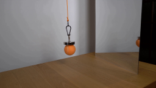
视觉工具实际返回图片 2
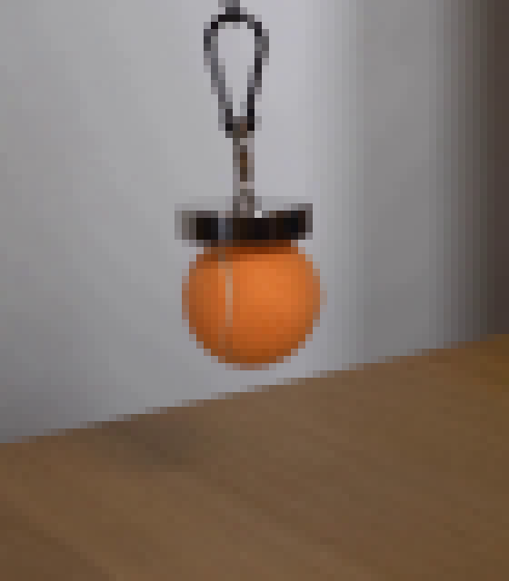
视觉工具实际返回图片 3
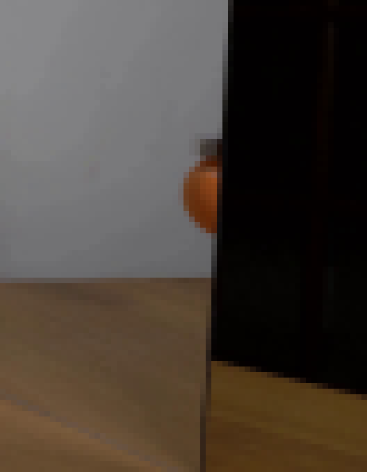
视觉工具实际返回图片 4
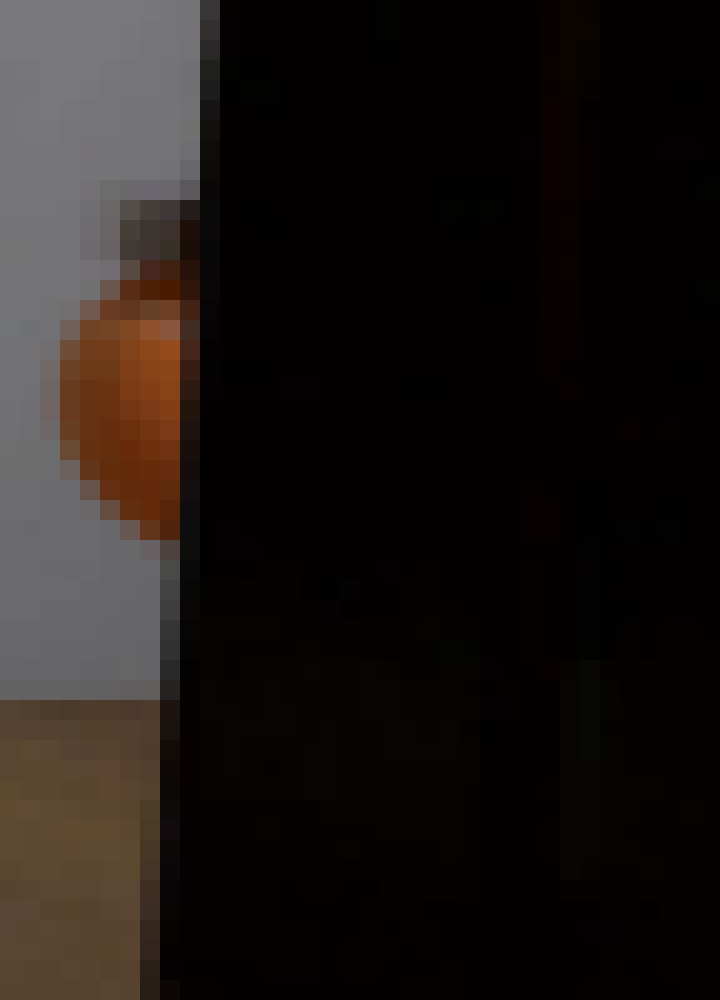
视觉工具实际返回图片 5
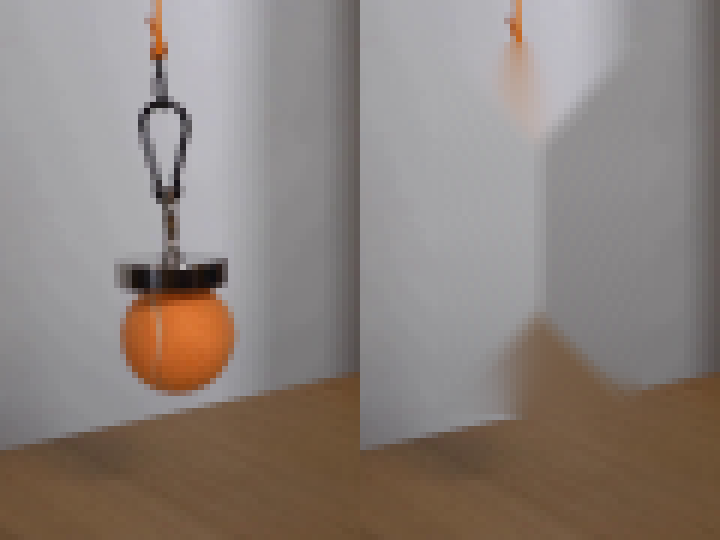
视觉工具实际返回图片 6
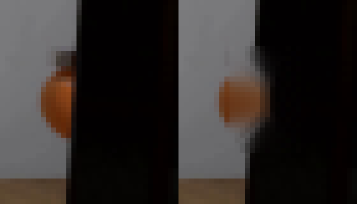
视觉工具实际返回图片 7

视觉工具实际返回图片 8

视觉工具实际返回图片 9
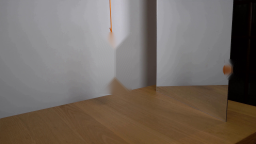
视觉工具实际返回图片 10
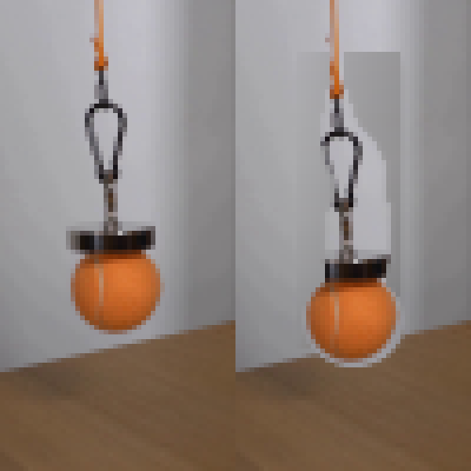
视觉工具实际返回图片 11

视觉工具实际返回图片 12
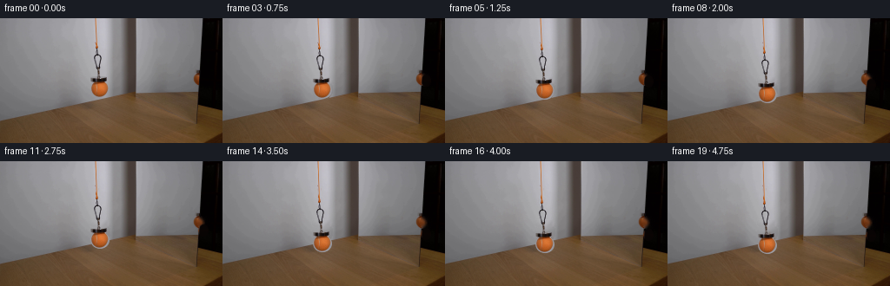
视觉工具实际返回图片 13
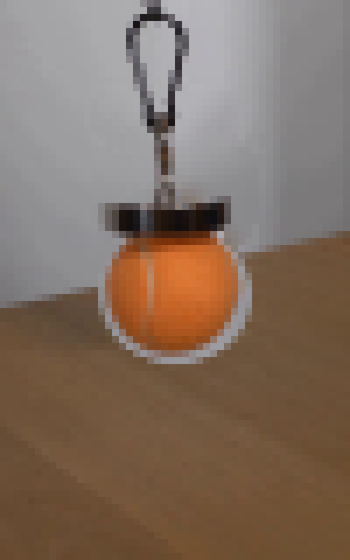
视觉工具实际返回图片 14
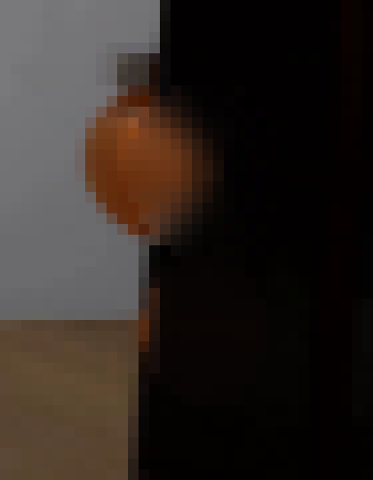
视觉工具实际返回图片 15
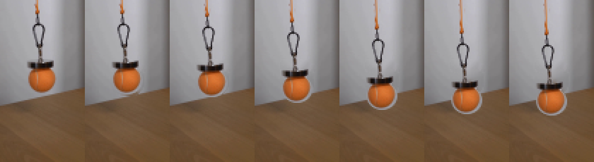
保存候选 3 份；完成命令 44 次；可验证图片返回 15 张。原始 API 响应与完整日志保留在本地。